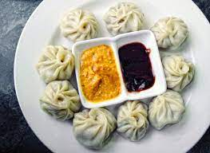

Mo:Mo

Discription
Momo is a type of steamed filled dumpling in Tibetan and Nepali cuisine that is also popular in neighbouring Bhutan and India
Ingredients
Steps
- Knead the dough.
- Fill the meat inside the dough.
- Put inside the utensil.
- Serve it hot and enjoy!